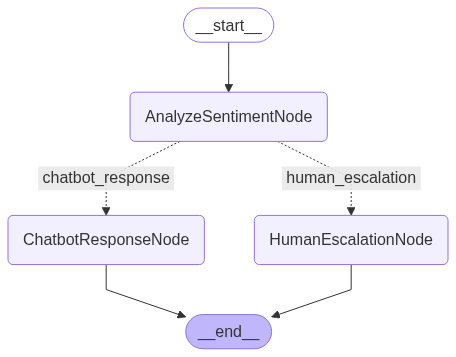

Workflow and Agent¶

The Vinagent library enables the integration of workflows built upon the nodes and edges of LangGraph. What sets it apart is our major improvement in representing a LangGraph workflow through a more intuitive syntax for connecting nodes using the right shift operator (>>). All agent patterns such as ReAct, chain-of-thought, and reflection can be easily constructed using this simple and readable syntax.
We support two styles of creating a workflow:
FlowStateGraph: Create nodes by concrete class nodes inherited from class Node of vinagent.FunctionStateGraph: Create a workflow from function, which are decorated with @node to convert this function as a node.
FlowStateGraph¶
These are steps to create a workflow:
-
Define General Nodes Create your workflow nodes by inheriting from the base Node class. Each node typically implements two methods:
-
exec: Executes the task associated with the node and returns a partial update to the shared state. -
branching(optional): For conditional routing. It returns a string key indicating the next node to be executed. -
Connect Nodes with
>>Operator Use the right shift operator (>>) to define transitions between nodes. For branching, use a dictionary to map conditions to next nodes.
from typing import Annotated, TypedDict
from vinagent.graph.operator import FlowStateGraph, END, START
from vinagent.graph.node import Node
from langgraph.checkpoint.memory import MemorySaver
from langgraph.utils.runnable import coerce_to_runnable
# Define a reducer for message history
def append_messages(existing: list, update: dict) -> list:
return existing + [update]
# Define the state schema
class State(TypedDict):
messages: Annotated[list[dict], append_messages]
sentiment: str
# Optional config schema
class ConfigSchema(TypedDict):
user_id: str
# Define node classes
class AnalyzeSentimentNode(Node):
def exec(self, state: State) -> dict:
message = state["messages"][-1]["content"]
sentiment = "negative" if "angry" in message.lower() else "positive"
return {"sentiment": sentiment}
def branching(self, state: State) -> str:
return "human_escalation" if state["sentiment"] == "negative" else "chatbot_response"
class ChatbotResponseNode(Node):
def exec(self, state: State) -> dict:
return {"messages": {"role": "bot", "content": "Got it! How can I assist you further?"}}
class HumanEscalationNode(Node):
def exec(self, state: State) -> dict:
return {"messages": {"role": "bot", "content": "I'm escalating this to a human agent."}}
# Define the Agent with graph and flow
class Agent:
def __init__(self):
self.checkpoint = MemorySaver()
self.graph = FlowStateGraph(State, config_schema=ConfigSchema)
self.analyze_sentiment_node = AnalyzeSentimentNode()
self.human_escalation_node = HumanEscalationNode()
self.chatbot_response_node = ChatbotResponseNode()
self.flow = [
self.analyze_sentiment_node >> {
"chatbot_response": self.chatbot_response_node,
"human_escalation": self.human_escalation_node
},
self.human_escalation_node >> END,
self.chatbot_response_node >> END
]
self.compiled_graph = self.graph.compile(checkpointer=self.checkpoint, flow=self.flow)
def invoke(self, input_state: dict, config: dict) -> dict:
return self.compiled_graph.invoke(input_state, config)
# Test the agent
agent = Agent()
input_state = {
"messages": {"role": "user", "content": "I'm really angry about this!"}
}
config = {"configurable": {"user_id": "123"}, "thread_id": "123"}
result = agent.invoke(input_state, config)
print(result)
{'messages': [{'role': 'user', 'content': "I'm really angry about this!"}, {'role': 'bot', 'content': "I'm escalating this to a human agent."}], 'sentiment': 'negative'}

FunctionStateGraph¶
We can simplify the coding style of a graph by converting each function into a node and assigning it a name.
-
Each node will be a function with the same name as the node itself. However, you can override this default by using the
@node(name="your_node_name")decorator. -
If your node is a conditionally branching node, you can use the
@node(branching=fn_branching)decorator, wherefn_branchingis a function that determines the next node(s) based on the return value of current state of node. -
In the Agent class constructor, we define a flow as a list of routes that connect these node functions.
from typing import Annotated, TypedDict
from vinagent.graph.operator import END, START
from vinagent.graph.function_graph import node, FunctionStateGraph
from vinagent.graph.node import Node
from langgraph.checkpoint.memory import MemorySaver
from langgraph.utils.runnable import coerce_to_runnable
# Define a reducer for message history
def append_messages(existing: list, update: dict) -> list:
return existing + [update]
# Define the state schema
class State(TypedDict):
messages: Annotated[list[dict], append_messages]
sentiment: str
# Optional config schema
class ConfigSchema(TypedDict):
user_id: str
def branching(state: State) -> str:
return "human_escalation" if state["sentiment"] == "negative" else "chatbot_response"
@node(branching=branching, name='AnalyzeSentiment')
def analyze_sentiment_node(state: State) -> dict:
message = state["messages"][-1]["content"]
sentiment = "negative" if "angry" in message.lower() else "positive"
return {"sentiment": sentiment}
@node(name='ChatbotResponse')
def chatbot_response_node(state: State) -> dict:
return {"messages": {"role": "bot", "content": "Got it! How can I assist you further?"}}
@node(name='HumanEscalation')
def human_escalation_node(state: State) -> dict:
return {"messages": {"role": "bot", "content": "I'm escalating this to a human agent."}}
# Define the Agent with graph and flow
class Agent:
def __init__(self):
self.checkpoint = MemorySaver()
self.graph = FunctionStateGraph(State, config_schema=ConfigSchema)
self.flow = [
analyze_sentiment_node >> {
"chatbot_response": chatbot_response_node,
"human_escalation": human_escalation_node
},
human_escalation_node >> END,
chatbot_response_node >> END
]
self.compiled_graph = self.graph.compile(checkpointer=self.checkpoint, flow=self.flow)
def invoke(self, input_state: dict, config: dict) -> dict:
return self.compiled_graph.invoke(input_state, config)
# Test the agent
agent = Agent()
input_state = {
"messages": {"role": "user", "content": "I'm really angry about this!"}
}
config = {"configurable": {"user_id": "123"}, "thread_id": "123"}
result = agent.invoke(input_state, config)
print(result)
{'messages': [{'role': 'user', 'content': "I'm really angry about this!"}, {'role': 'bot', 'content': "I'm escalating this to a human agent."}], 'sentiment': 'negative'}